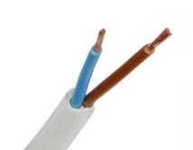

Задача 1. Скок с бънджи
Приятелите на Митко му правят подарък за рождения ден - скок с бънджи. Митко е висок $h_0 = 2~\mathrm{m}$ и има маса $m = 100~\mathrm{kg}$. Той скача без начална скорост от платформа с височина $h = 25~\mathrm{m}$ над езеро. Краката му са завързани за еластично въже, другият край на което е закрепен към платформата. Митко започва да пада от изправено положение. Дължината и коефициентът на еластичност на въжето са подбрани така, че в най-долната точка Митко да докосне с главата си повърхността на водата. В края на скока, след като трептенията на въжето затихват, Митко се оказва с краката нагоре, а главата му се намира на разстояние $\Delta h = 8~\mathrm{m}$ над повърхността на водата. Приемете човешкото тяло за еднороден цилиндър и земното ускорение $g = 10~\mathrm{m/s^2}$. А) Намерете максималната дължина $l_1$ на въжето в разтегнато състояние. (0,5 т)
Б) Намерете дължината на въжето $l_2$, когато Митко се намира в равновесие. (0,5 т)
В) Намерете дължината на въжето $l_0$ в недеформирано състояние. (3,5 т)
Г) Намерете коефициента $k$ на еластичност на въжето. (1,0 т)
Д) Намерете максималната скорост на Митко по време на падането. (2,0 т)
Е) Намерете максималното ускорение на Митко по време на падането. (2,5 т)
Задача 2. Проблем с електрозахранването в стара къща

Електрическото захранване в стара къща е направено от двупроводна линия (фиг. 1), т.е. състои се от два еднакви изолирани един от друг проводника АС и ВD, всеки с дължина l, както схематично е показано на фиг. 2. С времето изолацията на проводниците на някои места се нарушава поради стареене на материала. Съответно съпротивлението на изолацията намалява и между проводниците започва да протича ток. Нарушената изолация се намира на еднакво разстояние $x$ от краищата А и В на двата проводника, както е показано на фиг. 2. Участъкът с нарушената изолация е еквивалентен на резистор със съпротивление R0, свързващ двата кабела.
С цел определяне на $x$ били измерени три съпротивления:
-
Съпротивлението $R_1$ между точките А и В, когато точките C и D не са свързани.
-
Съпротивлението $R_2$ между точките А и В, когато точките C и D са свързани накъсо.
-
Съпротивлението $R_3$ между точките C и D, когато точите A и B не са свързани.
А) Как зависи съпротивлението $R$ на проводник от дължината му? Аргументирайте отговора си и пояснете смисъла на участващите във формулата величини. (1,0 т)
Б) Начертайте еквивалентна електрическата схема за всяко от трите измервания. Приемете, че е известно съпротивлението $\lambda$ на единица дължина на проводниците (eдиницата за $\lambda$ е $\Omega$/m, т.е. ом върху метър). Съпротивлението на нарушената изолация е $R_0$. (1,5 т)
В) Изразете съпротивлението $R_0$ на нарушената изолация чрез $\lambda$, $R_1$, $R_2$ и $R_3$. (5,5 т)
Г) Изразете разстоянието $x$ до нарушената изолация чрез $\lambda$, $R_1$, $R_2$, $R_3$. (2,0 т)
Задача 3. Задачата се състои от две независими части
Част 1. Изчистваме палубата на кораб от лед (Московска 1990.8.1)
Палубата на риболовен кораб е покрита с големи парчета лед с температура $T_0 = 0~\mathrm{^\circ C}$, останали след чистене на хладилните камери. Работник на кораба трябва да махне леда, като го полива от маркуч със струя вода с температура $T_1 = 20~\mathrm{^\circ C}$. За да не се наводнява палубата, в основата ѝ има процепи, през които излишната вода изтича в морето. Масата вода, която се излива от маркуча върху леда за единица време, е $q = 10~\mathrm{kg/s}$. Температурата на изтичащата от процепите вода е $T = 3~\mathrm{^\circ C}$. Топлообменът между водата и околната среда се пренебрегва. Специфичният топлинен капацитет на водата е $c = 4200~\mathrm{J/kg.^\circ C}$, топлина на топене на леда е $\lambda = 3,3.105~\mathrm{J/kg}$.
а специфичната
А) Напишете уравнението за топлинен баланс в общия случай, т.е. когато произволен брой n тела обменят топлина помежду си. (1 т)
Б) Получете израз за количеството топлина $Q_1$, което падащата вода обменя с леда за определен интервал от време $\Delta t$. (2 т)
В) Получете израз за количеството топлина $Q_2$, което ледът получава от падащата върху него вода за определен интервал от време $\Delta t$. (1 т)
Г) Получете израз и пресметнете масата вода $q_1$, изтичаща от процепите в палубата за единица време. (4 т)
Жокер: Обърнете внимание, че размерността на q е kg/s! Може да използвате, че за даден инертвал от време $\Delta t$ от маркуча се излива вода с маса $\Delta m = q\Delta t$.
Част 2. Как да изчакаме чаят да изстине!
Тази задача не изисква аналитично решение (формули), а само обяснение въз основа на природните закони.
Обичам да пия чай с малко добавено мляко. Сипвам си много горещ чай в чашата и изваждам млякото от хладилника. Как трябва да постъпя, така че чаят да се охлади побързо до температура, подходяща за пиене:
a) да изчакам 5 минути и после да добавя малко мляко;
б) веднага да добавя малко мляко и после да изчакам, докато сместа изстине. (2 т)
Жокер: Количеството топлина $Q$, отдадено в околното пространство за единица време зависи от разликата $\Delta T$ между температурите на чашата и тази на околната среда. Приемете, че чаят и млякото имат приблизително един и същ специфичен топлинен капацитет и масата на добавеното мляко е много по-малка от масата на чая. \end{document}